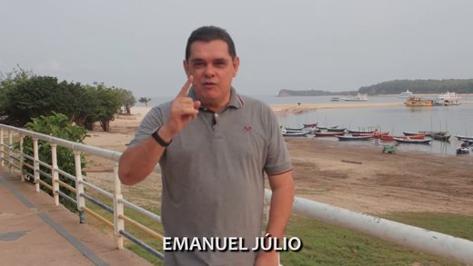

00:00:01.335
Emanuel Júlio aparece junto à grade da orla, com o indicador levantado e barcos pequenos atrás dele.
Alter do Chão, Santarém (PA) · confirmado
O apresentador abre o convite para a estreia da série turística do canal.
Transcrição · 00:00:00
Turismo Aqui — quadro de vídeo publicado no YouTube